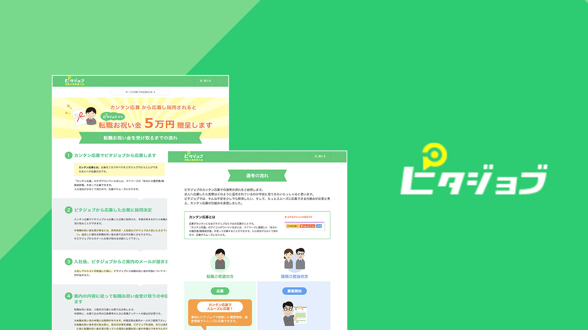
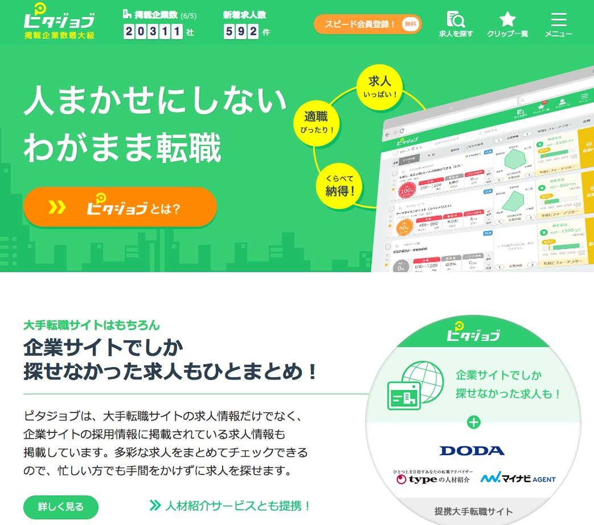
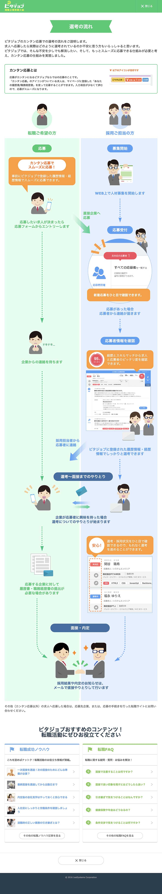
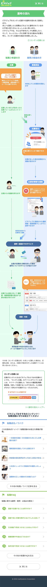
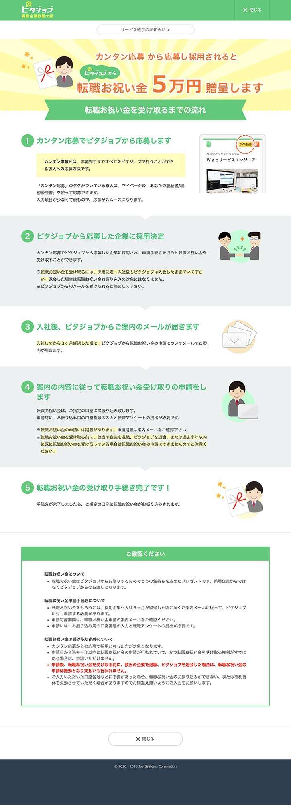
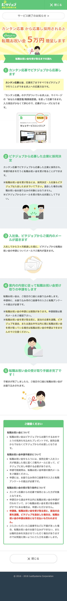
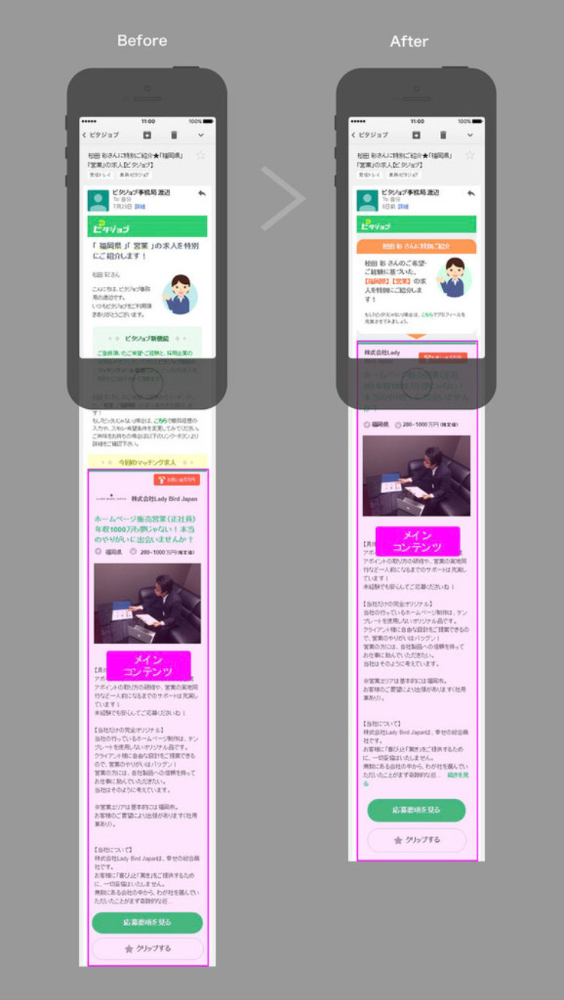
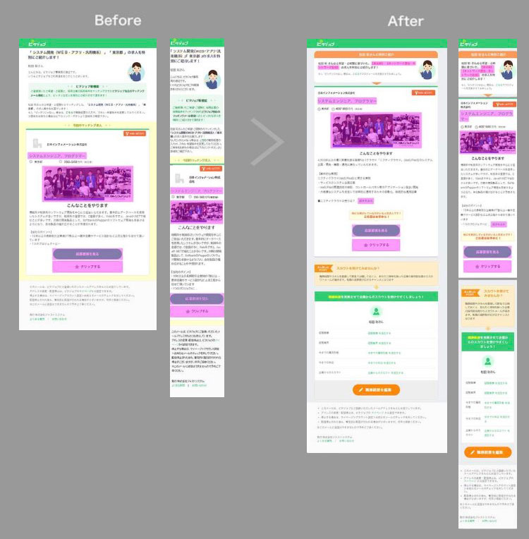

求職者サイト
新規ページデザイン
UI改善, A/Bテスト
求職者向けメルマガ改善
HTMLデザイン/コーディング
メールシステムを使ったテスト/配信, A/Bテスト
他の転職サイトや企業サイトから集めた20,000件以上の求人情報から、こだわり条件にピッタリな転職先を分かりやすく・カンタンに探せる転職サイト。 求職者向けサイトと企業向けサイトの２サイトあり、求職者サイトの改善担当を１年担当。プロジェクトの目標である採用率アップに向け、UIやフローの改善を進めました。

転職活動中に行うやりとりや流れを「求職者」「採用担当者」それぞれの視点で表現し、先の見通しを立てやすくする目的で作成したページです。スマホ表示でも縦2分割で選考の流れと情報を見せられるよう表現を工夫しました。


お祝い金を受け取る為の複雑な条件をイラストで表したりポイントを強調し、ユーザーが行動に移しやすくする為の工夫をしました。


メルマガからのサイト流入増を目指す為とメルマガデザインとコーディングを担当しました。
現状のメルマガや他社メルマガを試した気づきから、スマホのファーストビューの調整を重点的に実施。ファーストビューで
・何のメルマガかぱっと見で伝わるようにすること
・メインコンテンツ（求人情報）が見えるようにすること
・サイトへの入り口となるクリック箇所を増やすこと
を重視しました。
改善の結果、開封率・クリック率ともアップし、メール流入からの応募率が１番高くなる時期もありました。

